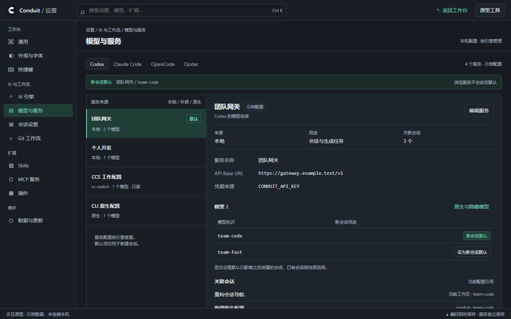
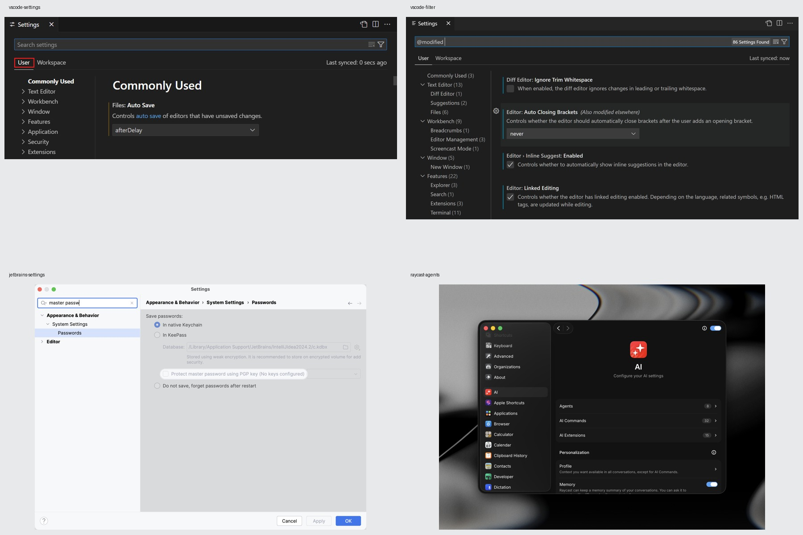

让所有设置使用同一套规则
技术风格、紧凑布局、高信息密度。此次从导航到编辑方式一起重构，覆盖全部 11 类菜单。三个方向都能实际切换页面、修改示例设置和查看资源详情。
建议 A：IDE 控制中心
稳定的分类导航适合长期承载全部设置。服务、扩展共用对象详情，普通偏好共用属性行；预览按需打开，设置独占工作视图。
阅读完整重构方案与实施顺序


用同一菜单比较三个方向
切换方向与菜单，直接操作下方原型。示例数据不连接本机。
11 类菜单，逐页检查
点击截图进入对应菜单；以下展示所选方向的全部页面。
研究成熟产品，借鉴可迁移的机制


搜索与分类树负责定位，路径表达当前归属。用于 Conduit 的稳定导航；保留 Conduit 自己的自动保存与局部表单提交规则。
搜索能筛选设置，已修改项可定位、可恢复。用于消除设置中叠放的多个搜索框，并为专家保留字段检索。
选择扩展后管理其命令与配置。用于统一引擎、服务、Skills、MCP、插件的列表与详情，来源和影响范围随对象展示。
整套界面共同遵守的四条规则
设置独占工作视图
暂时收起聊天两侧面板，返回时恢复布局和焦点，减少层层挤压。
四类内容模板
偏好表单、对象列表详情、快捷键表、配置编辑器，共用页头与状态。
范围与状态准确
查看不改变默认，连接成功不代表会话已加载，安装目标始终可见。
保存方式明确
偏好自动保存，服务配置明确保存或取消，离开编辑时保护草稿。
完整迁移清单
| 分组 | 全部菜单 | 统一后的呈现 |
|---|---|---|
| 工作台 | 通用、外观与字体、快捷键 | 紧凑属性行；外观预览按需；快捷键可录入、校验冲突 |
| AI 与工作流 | AI 引擎、模型与服务、会话设置、Git 工作流 | 列表与详情统一；默认和引用关系明确；长提示词独立编辑 |
| 扩展能力 | Skills、MCP 服务、插件 | 统一已安装/发现、列表/详情、来源/范围、操作状态 |
| 应用维护 | 数据与更新 | 路径信息、更新任务状态、自动更新偏好和性能监测 |
先统一外壳与组件，再一次迁移全部页面类型。最终按 11 页、明暗主题、窄窗、字号放大、中文/英文、只读/错误/未保存状态验收。